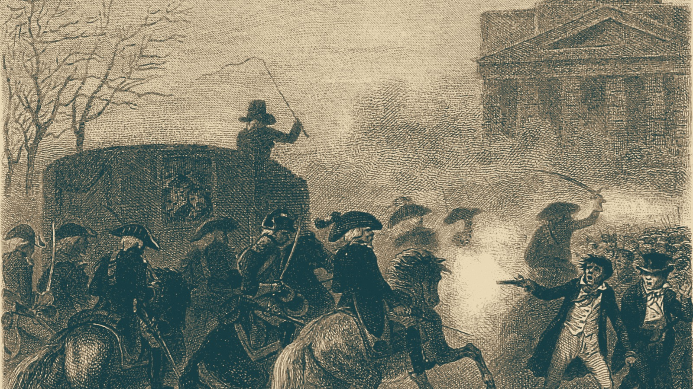

泰平軍、首都アルガリストを占領
帝国はヴァルセナで抗戦継続
首都守備の山岳兵全滅 政府機能はヴァルセナへ 帝国兵力16,400人

【総合部】泰平天国軍は第143期、アルガリスト帝国の首都アルガリスト（47,40）を占領した。首都区画を守っていた帝国山岳兵は全滅。帝国は滅亡せず、東隣の大都市ヴァルセナ（48,40）など26区画を保ち、抗戦を続けている。
第142期、泰平軍は首都西隣の町を占領し、食料50,000トンを徴発した。第143期には北の砲兵3隊が守備隊を集中攻撃し、山岳兵と装甲兵が首都の市街へ進入した。帝国軍も反撃したが、今期の戦果は泰平5,600人、帝国1,100人。兵力は泰平707,000人に対し帝国16,400人となった。
星書宰相、官印と星図をヴァルセナへ 統治の継続図る
星書廉宰相は、首都の学院に残る官印と星図を東隣の大都市ヴァルセナへ運ばせた。帝国は首都を失ったが、なお26区画を領有し、政務と抗戦を続ける。「都を失った事実は覆せない。だが帝国の名まで門に置いてはこなかった」と星書。学院では司書が持ち出せない蔵書の目録を作り、避難する荷車には帳簿から積み込んだ。
働き手24,200人不足 残る都市の維持に重荷
帝国の人口は67,800人、働き手の不足は24,200人。ヴァルセナの市場や鉱山、兵站を維持するには、前線での戦闘とは別に人手が要る。今期予定していた（47,42）での徴兵も、その地点を泰平軍が占領したため中止された。帝国は国庫16,592億円、食料1,321,200トンを保つが、首都と兵を失った負担は大きい。戦闘の詳細は2面。
アルヴェナに艦砲命中 住民200人が犠牲
【軍事部】カペレナ王国の戦艦が黒潮自治国の首都アルヴェナ（20,17）を砲撃し、住民200人が死亡した。首都区画の黒潮部隊は全滅した一方、王国軍も隣接地で一部隊を失った。今期の戦果はカペレナ9,200人、黒潮600人。詳報3面。
火災48,500人 なのですの工場も壊滅
【社会部】チェス＝シロバキア、なのです、泰平の3か国で火災が相次ぎ、計48,500人が死亡した。なのですでは工場1か所も壊滅。第135期から9期の累計は420,700人となった。詳報4面。